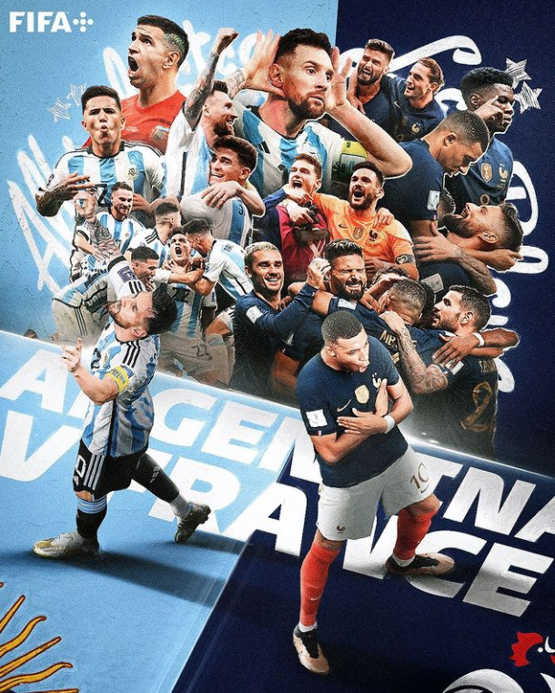
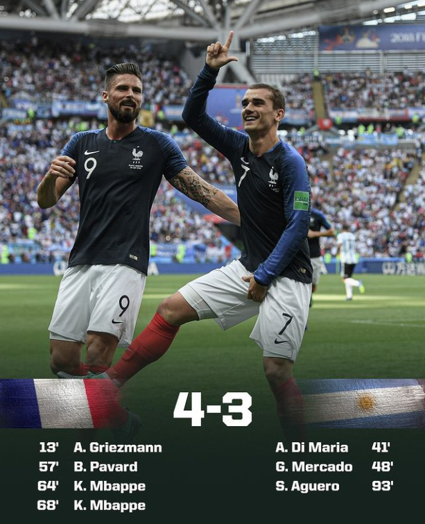
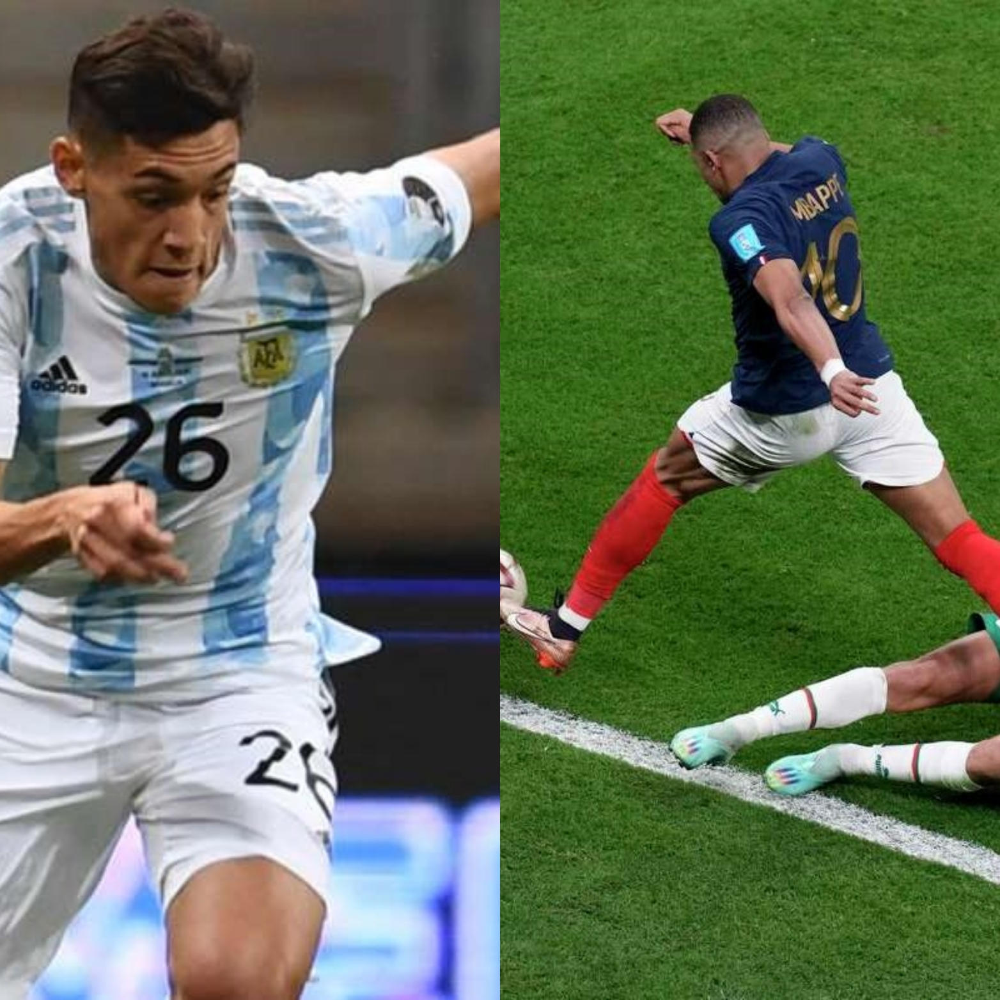
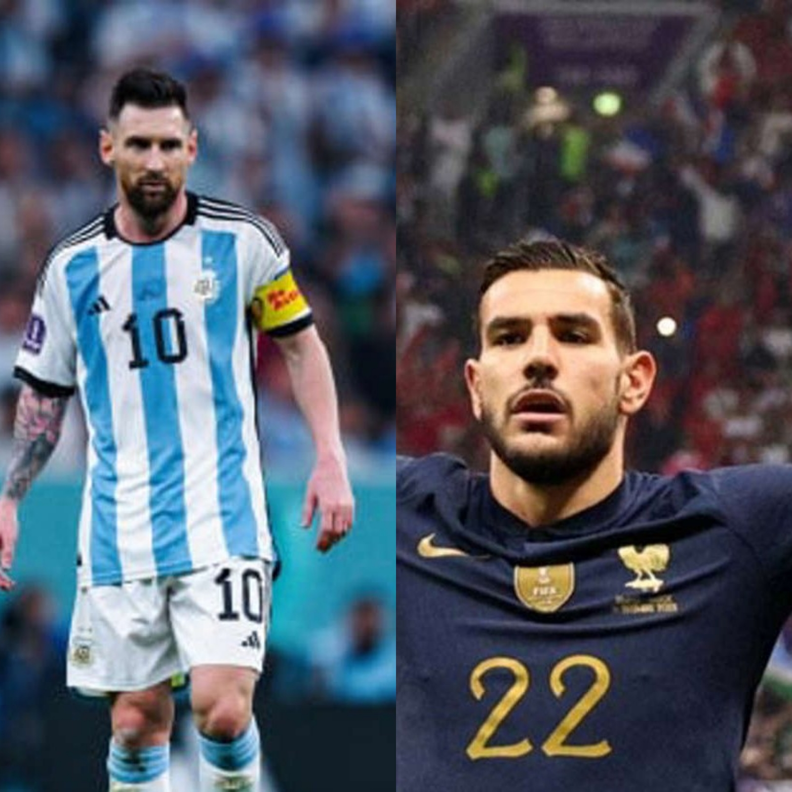
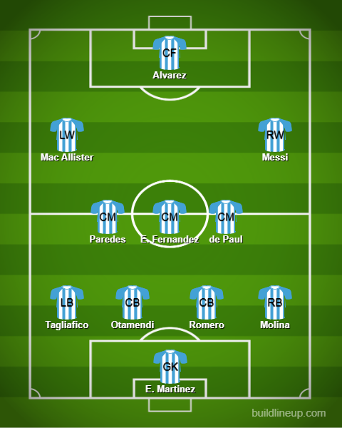
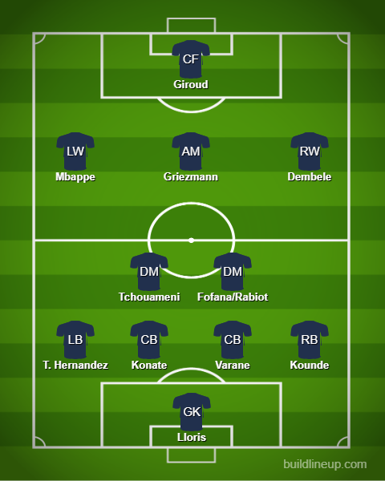

Argentina v France Preview

This is it. We have our 2 finalists. Argentina: Copa America and Finalissima winners and France: Defending Champions who have broken the status quo.
Will it be revenge and redemption for Messi and Argentina or will Mbappe and France completely shatter the defending champions curse????
As much as France have been great it hasn’t gone unnoticed that they have become more pragmatic towards the end of the knockouts. They have good attacking spells don’t get me wrong. Against England, we saw it when they got back in front. It will all rely on a moment. It was more evident against Morocco when they took the lead so early and they just sat back and let Morocco attack and attack. They hit on the counter usually and managed to get a second. The lack of clinical finishing from Morocco helped even more. This fixture was played in the Round of 16 in the last World Cup and this was the score:

Mind you Argentina had a way worse defense back then with the likes of Rojo and GK in Armani too and the midfield had Ever bloody Banega(He was decent-ish but has faded into obscurity. That’s all I’ll say). Aguero was benched and he almost pulled the game into extra time despite the fact they conceded 4. He scored one and missed a great chance to draw level. Argentina did huff and puff a lot after the 4 goals from France and almost came back. Shades of that same thinking have surfaced now it is seeming like. But now, both teams are at their absolute peak as well. Great players in each and every position. It will be hard to call. Like all great finals, it will rely on a moment of magic. Will it come from the nimble Messi or will it come from speedy Mbappe? We will find out. My guess on a scoreline is 2-1. Argentina scoring will push France to equalize and a moment of magic decides the World Cup and Messi retires with a World Cup 😆. Yes, I am an Argentina and Messi fan. Ever since I played a Barcelona career mode on a PSP I have been supporting him ever since so sue me 😂. If this win does happen. He will be virtually untouchable. That is mad to think about 😱. Honestly, it could go either way.
What to watch for
Mbappe v Molina and T. Hernandez v Messi


People think this is a normal matchup always and if the lineup goes like usual this is going to be interesting to watch. Not just because it is a match-up of quality. But also because both the wingers on that side will not track back. They usually don’t track back 😅. Mbappe on the left and Messi on the right. You see where I am going with this. Molina and Theo will have the big task of neutralizing their opposite marks. Molina especially with Mbappe’s reliance on his pace. Hernandez with Messi’s bag of tricks and sudden burst of speed.
Lineups
I am mostly thinking both coaches will go for the same lineups that worked for them in their respective semi-finals. France with their usual 4-2-3-1 and Argentina with a 4-4-2 but maybe with wingers instead of the 4-man midfield but with the likes of Griezmann running all over the pitch along with Tchouameni and Fofana(Maybe Rabiot will be back by then. We don’t know). Alvarez will definitely keep his spot after his 2 goals and Messi will supplement him from out wide and central at times.
Argentina

This was slightly seen in the semi-final when Mac Allister drifted wide and Messi dropped back to be on the right primarily and a 3-man midfield which was highly defensive and Enzo Fernandez will be the person to drive the ball forward and pick a pass. So I am going for something similar. Something that could be worth a shout is maybe Di Maria for the RW to support Molina and keep Messi up front like a CAM or second striker.
France

Fairly similar to their semi-final lineup and Griezmann could very well be at CM, CDM and CAM because he was everywhere(Griezmannkante as Pogba called him 😂) It is a hard lineup to face and with the pace provided by both Mbappe and Dembele the cross is very certain and with Giroud as the target man he won’t miss for the national team.
About the third-place game
If both teams are willing to give a good go at it, we could see a good game. Maybe Croatia could get it done due to the quality of their midfield and also it being Modric’s last game for his country quite possibly. Other than that I don’t see any standout moments.